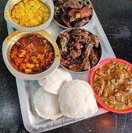
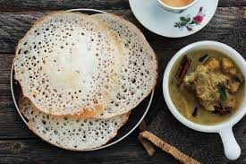
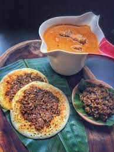
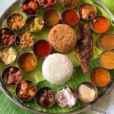
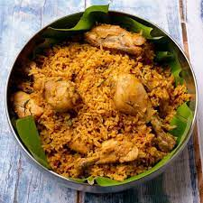
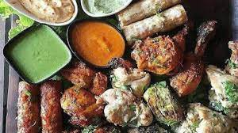
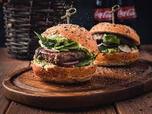
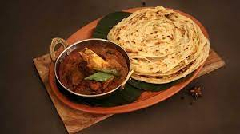
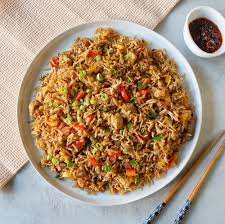
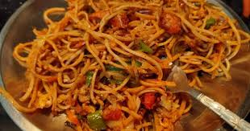

Idli with mutton curry
The steadily cooked mutton becomes more tender than normally cooked mutton.We served this mutton curry with idli for your breakfast.
Appam with paya
Appam is a type of pancake made with fermented rice batter.Paya is best cooked slowly and for a longer time for the meat to get tender and acquire the best flavour.
Kari dosa
Kari Dosa is a three-layered dosa: the first layer is plain dosa, the second layer is an egg omelette, and the top layer is minced meat
Non-veg Meals
Non Veg meals contains red meat, poultry, seafood, or the flesh of any other animal and sometimes eggs.
Chicken biryani
Chicken Biryani is a savory chicken and rice dish that includes layers of chicken, rice, and aromatics that are steamed together.
Mutton biryani
A pot of marinated mutton, topped with parboiled basmati rice baked in an oven or on a slow fire to an aromatic and finger licking biryani.
Barbeque chicken
Barbeque chicken is often seasoned or coated in a spice rub, barbecue sauce, or both.
Pizza
Pizza consisting of a flattened disk of bread dough topped with some combination of olive oil, oregano, tomato, olives, mozzarella or other cheese
Burger
A burger is a patty of ground beef grilled and placed between two halves of a bun.
Parotta
Parotta a layered flatbread from southern India, made with ghee or oil and usually maida or white flour with mutton curry
Chicken fried rice
Fried rice is a dish of cooked rice that has been stir-fried in a wok or a frying pan and is usually mixed with other ingredients such as chicken.
Chicken noodles
Chicken noodles are a delicious flavor packed meal of stir fried noodles, chicken, vegetables and sauces.